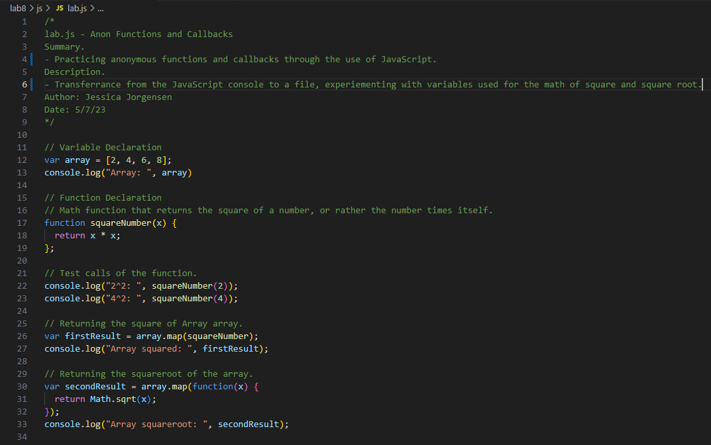
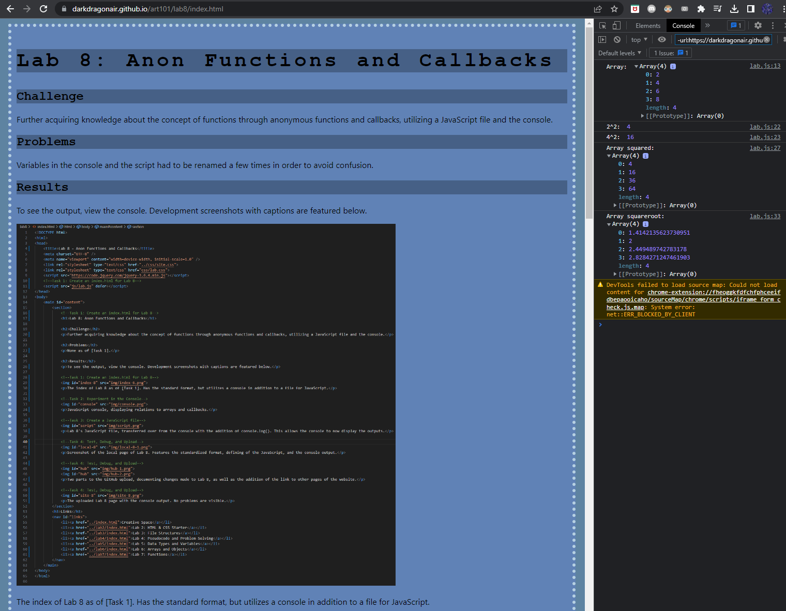

Lab 8: Anon Functions and Callbacks
Challenge
Further acquiring knowledge about the concept of functions through anonymous functions and callbacks, utilizing a JavaScript file and the console.
Problems
Variables in the console and the script had to be renamed a few times in order to avoid confusion.
Results
To see the output, view the console. Development screenshots with captions are featured below.
The index of Lab 8 as of [Task 1]. Has the standard format, but utilizes a console in addition to a file for JavaScript.
JavaScript console, displaying relations to arrays and callbacks.
Lab 8's JavaScript file, transferred over from the console with the addition of console.log(). This allows the console to now display the outputs.
Screenshot of the local page of Lab 8. Features the standardized format, defining of the JavaScript, and the console output.
The GitHub upload, documenting changes made to Lab 8, as well as the addition of the link to other pages of the website.
The uploaded Lab 8 page with the console output. No problems are visible.